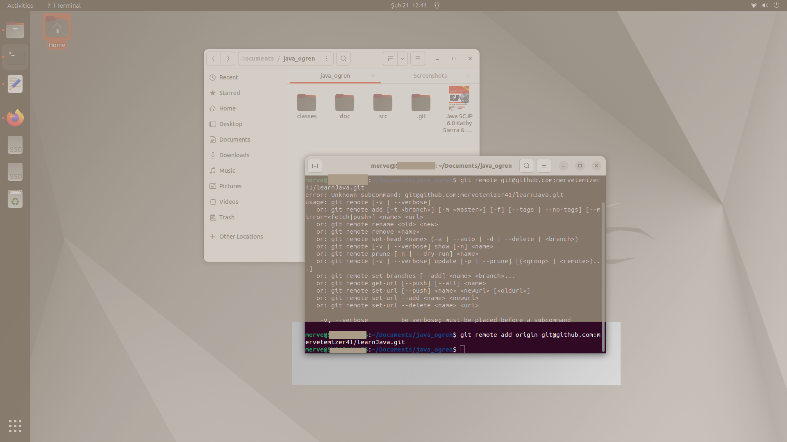
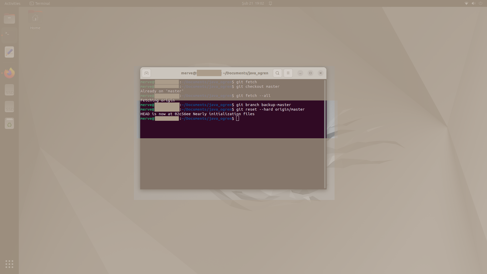

Başlarken dizin ve depolar ne durumdaydı?
Git, kullanmayı öğrendiğinizde işleri kolaylaştırır.Uzun bir süre önce yani bir kaç ay önce bir git deposu yapmıştım ancak içinde hiç kod veya belge yoktu. Github'da bir git deposu(repository) vardı ve bir de geliştirme yapılan bilgisayarda kodlar bulunan dizin vardı ve bunların birbirinden herhangi şekilde bir haberi yoktu.
Başlarken yerel dizin şu şekildeydi:
Ne yapılması gerekiyordu?
Geliştirme yapılan bilgisayardaki dizinde kodlar ve belgeler güncellendikçe yani yenileri yazıldıkça, git deposunun güncellenmesi ve bunun hangi git işlemleriyle yapılacağının bilinmesi gerekiyordu. İlk adımlarda bazı yanlışlıklar oldu ve bunlar giderildi. Macera da bu şekilde ortaya çıktı aslında.
Başlangıçta git deposuna eklenmek istenen dizinleri içeren dizinin içindeyken terminal açılıp "git init" çalıştırıldı.
Yerel dizini bir git deposu haline getirmek gerekir.
Bu sayede dizin içinde ".git" adlı bir dizin meydana geldi. Ardından git master dala ayarlandı: "git config --global init.defaultBranch master"
Yerel dizine uzaktaki depo hakkında bilgi vermek gerekir.
Yanlışa örnek, bir deneme yanılma kod parçası: "git remote git@github.com:mervetemizer41/learnJava.git" Bu çalıştırıldığında git'in nasıl kullanılması gerektiği konusunda bir dönüş alındı:
Hata giderilip "git remote add origin git@github.com:mervetemizer41/learnJava.git" komutu çalıştırıldı:
Böylece sorun çözülmüş oldu, artık uzaktaki(remote) depo hakkında yerel dizinin bir bilgisi var denilebilir, ancak yine de sorunlarla karşılaşılacak ve ilerleyen adımlarda bunlar giderilmeye çalışılacaktır.
git'in dizinlerden haberinin olması gerekiyor.
Hangi dizinlerinin eş zamanlı çalışması isteniyorsa bunlar git'e aşağıdaki şekilde ekleniyor:
"git add src"
"git add doc"
git'e değişikliklerin işlenmesi gerekiyor.
Bunların git'e işlenmesi gerekiyor "commit" kullanılarak, şu şekilde bir komutla: git commit -m "Nearly initialization files"
Değişikliklerin uzak depoya itilmesi gerekiyor.
Bunların git'e işlenmesi gerekiyor "commit" kullanılarak, şu şekilde bir komutla: git commit -m "Nearly initialization files"
Yerel depoyu kendi başına başlatmak sorun ortaya çıkardı.
There isn't anything to compare.
Bu sonuç, git'e uzak depodan haber vermek konusunda bir yanlışlık yapıldığını veya uzak deponun yereldekinden hiç haberinin olmadığını söylüyor.
Yani "git push" ile itilen veri ve uzaktaki dal o kadar birbirinden bağımsız ki karşılaştırılacak bir şey bulunamamamış.
Bu sonuç, git'e uzak depodan haber vermek konusunda bir yanlışlık yapıldığını veya uzak deponun yereldekinden hiç haberinin olmadığını söylüyor. Yani "git push" ile itilen veri ve uzaktaki dal o kadar birbirinden bağımsız ki karşılaştırılacak bir şey bulunamamamış.Aklımıza gelen ilk yöntem yereldeki ".git" dizinini yok etmek, bunu yok ederek işleri halledebileceğimizi öğrenmek de bir başarı ancak gerçek dünyada işler böyle yürümüyor, farkında olmak lazım. Yerel ".git" dizinini yok etmeden bir yolu bulunabilir.
.git dizinini sil baştan meydana getirmenin kolay yolu tercih edildi.
Aynı şeyi yapıp farklı sonuç bekliyorum ancak ".git" dizinini silmeden yanlışlığı düzeltebilecek olmayı öğrendim.
Adımları bütünüyle tekrar etmek gerekti.
Bu sefer dizin silmeden çözümü öğrenme yolu açılmış oldu. Neyse ki sorun fazlalaşıp, karmaşıklaşmamış, hala aynı sorun devam ediyor:
Dizin yok etmeden sorun çözülebilmesi git'in güzel tarafı.
Stackoverflow.com cevabına teşekkürler, işe yaradı:
Önce işleme yani "commit" de tekrar edildi ardından "git push"tan önce şu şekilde çalıştırıldı:
"git checkout master"
"git branch main master -f" "git checkout main"
"git push origin main -f"
Yereldeki dizinler artık uzakta ama eski "push" lar hala bir sorun.
Önceki eş zamanlılaştırma sırasında meydana gelen sorunu devam ediyor:
Dal yani "branch"ın bir yedeğini yeni bir dal ile alıp "git reset" çalıştırılıyor:
"git branch backup-master"
"git reset --hard origin/master"
 Sonra bu yedek dal silinebilir.